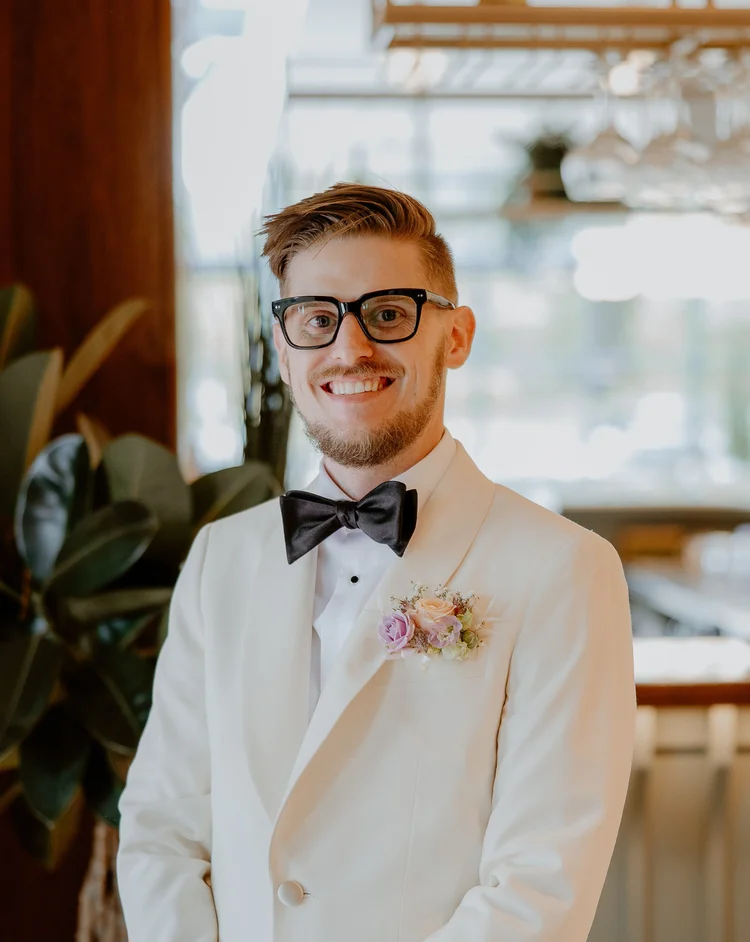
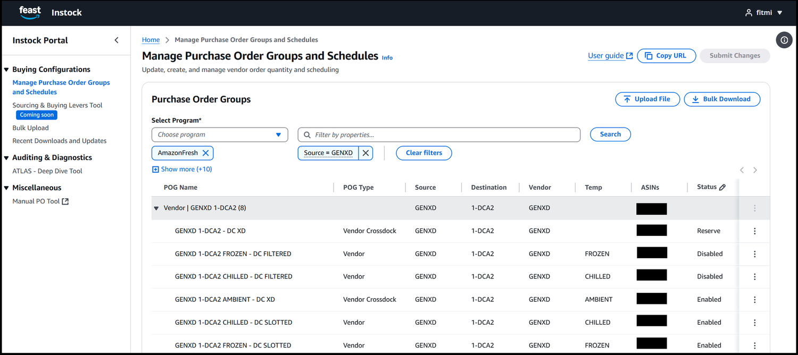
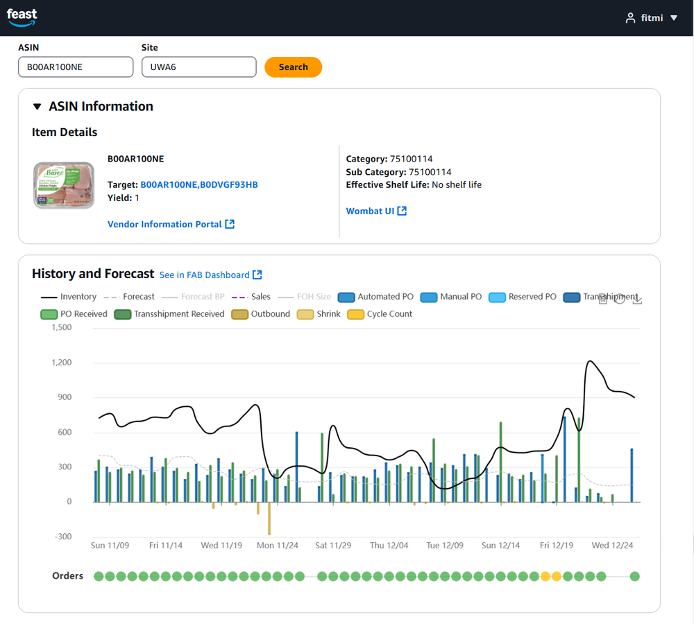
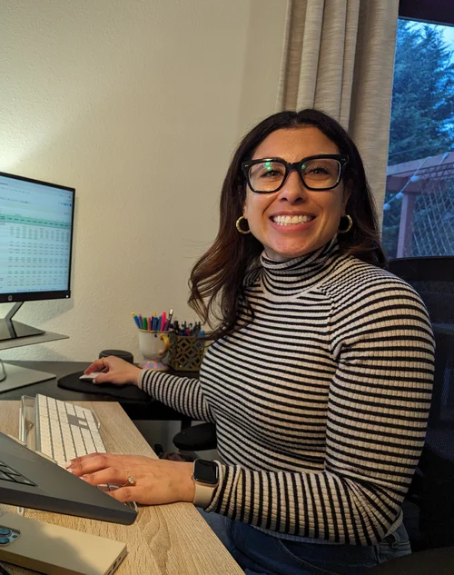
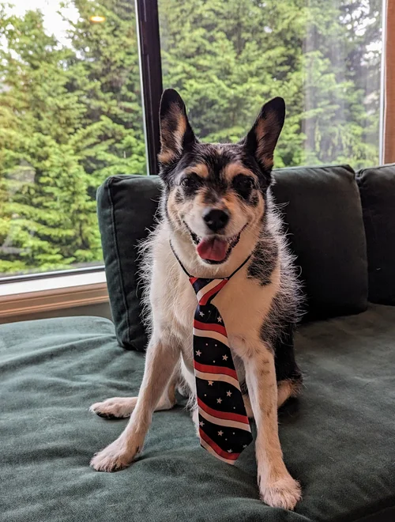

Senior Product Manager (Technical) with 14 years of progressive experience across Engineering and Product functions.
As a product manager, I’ve led multiple products from ideation through launch across Amazon Fresh and Amazon Music. My work has included setting product strategy with executive leadership, defining requirements, partnering closely with engineering and applied science teams on implementation, collaborating with design on user experience, and working with operations and business teams to support go-to-market execution.
Earlier in my career, I worked as a software engineer in Prime Video, where I built and maintained developer tools to diagnose a multi-model orchestration workflow.
I currently work for Amazon as a Senior Product Manager — Technical, and am based in Seattle.

I ask that this content only be used in the context of hiring decisions. It is not intended for public distribution.

Amazon Fresh’s primary platform for grocery replenishment and supply-chain decision-making, used by Instock Managers. The multi-year rebuild focused on modernizing a revenue-critical system operating at billions of dollars in annual scale, introducing modular architecture and AI-assisted diagnostics.

A diagnostics layer helping Instock Managers understand replenishment decisions and supply-chain breakdowns. Scaled to become the #1 diagnostic tool in Amazon Fresh, maintaining 92% weekly adoption.
I’m a technical product manager who started out as a software engineer — and never really stopped building. At Amazon I’ve shipped products across Fresh and Music, but the throughline of my career has been turning ambiguous, revenue-critical problems into systems people actually want to use.
Outside of work, I build. Lately that’s meant spinning up full-stack side projects with Claude Code — an autonomous prediction-market trading system, a job-hunting agent, a grocery-app parody — each one an excuse to go deep on a new corner of the stack. This site is one of them: hand-built, no page builder.
I’m based in Seattle. When I’m not shipping, you’ll find me with my wife Carla and our resident Chief Morale Officer, Bailey.
Every good leader benefits from trusted advisors. Mine don’t sit in conference rooms — they live at home.


Interested in working together? The best way to reach me is email — I’ll be in touch shortly.